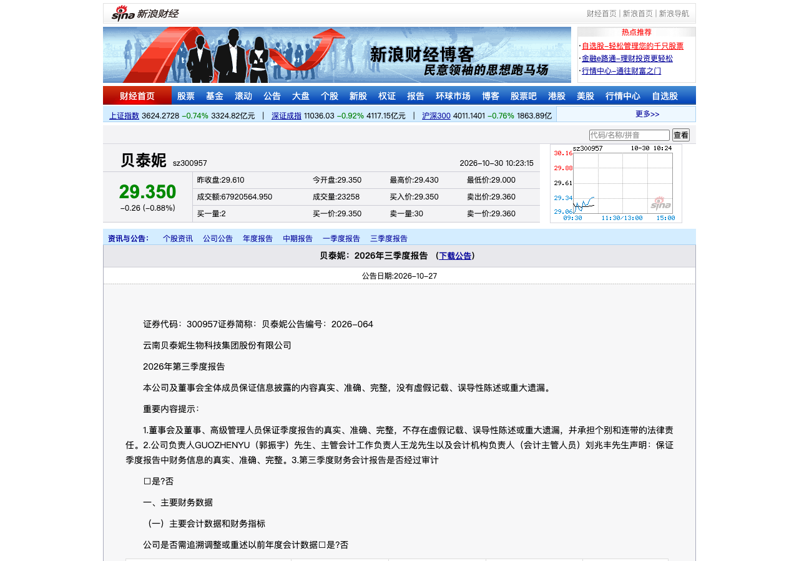

S五份国货美妆三季报显示收入与利润修复不同步，双11需同时检验库存和投放
10月26日晚，贝泰妮对外披露三季报，第三季度收入10.46亿元，同比下降4.28%，扣非归母净利润亏损2319万元；期末存货7.58亿元，较年初增加43.42%，公司称主要用于第四季度大促和新品上市提前备货。前三季度收入仍同比增长4.99%，但单季利润压力已显现。10月28日，上海家化披露第三季度收入15.70亿元、同比增长5.87%，扣非归母净利润2467万元；同期归母净利润4.25亿元包含股权处置等非经常性收益，不能直接等同于美妆主业盈利。公司同期经营数据公告列示第三季度美妆板块收入4.86亿元。贝泰妮三季度报告｜上海家化三季度报告｜上海家化主要经营数据公告
10月30日披露的华熙生物三季报显示，第三季度收入8.40亿元、同比下降6.96%，扣非归母净利润3099万元、同比增长165.00%；利润指标改善尚未伴随收入回升。同日，水羊股份披露第三季度收入11.58亿元、同比增长27.34%，归母净利润1376万元、同比增长9.39%；收入扩张与利润增速存在较大差距。丸美生物第三季度收入5.72亿元、同比下降16.61%，归母净利润亏损1819万元，扣非归母净利润亏损4013万元。公司在交易所原文中将收入下降与品牌推广、线上投流、研发等持续投入并列为利润承压原因。华熙生物三季度报告｜水羊股份三季度报告｜丸美生物交易所公告原文
这五家企业的财季口径相同，经营模式和品牌组合却不同。对双11的判断应进一步拆分主力品牌实际动销、预先备货的消化、流量投放与扣非利润；归母利润中包含一次性收益时，需回到扣非和现金流看主业。单一公司或单一增速不足以代表整个国货市场的景气方向。贝泰妮三季度报告｜上海家化三季度报告｜丸美生物交易所公告原文
